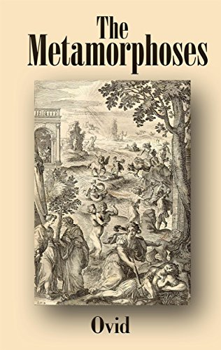
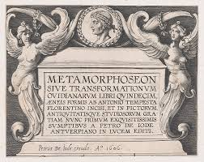
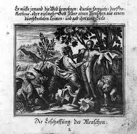

The Metamorphoses
Chaos is divided by the Deity into four Elements: to these their respective inhabitants are assigned, and man is created from earth and water. The four Ages follow, and in the last of these the Giants aspire to the sovereignty of the heavens; being slain by Jupiter, a new race of men springs up from their blood. These becoming noted for their impiety, Jupiter not only transforms Lycaon into a wolf, but destroys the whole race of men and animals by a Deluge, with the exception of Deucalion and Pyrrha, who, when the waters have abated, renew the human race, by throwing stones behind them. Other animated beings are produced by heat and moisture: and, among them, the serpent Python.
Phœbus slays him, and institutes the Pythian games as a memorial of the event, in which the conquerors are crowned with beech; for as yet the laurel does not exist, into which Daphne is changed soon after, while flying from Phœbus. On this taking place, the other rivers repair to her father Peneus, either to congratulate or to console him; but Inachus is not there, as he is grieving for his daughter Io, whom Jupiter, having first ravished her, has changed into a cow. She is entrusted by Juno to the care of Argus; Mercury having first related to him the transformation of the Nymph Syrinx into reeds, slays him, on which his eyes are placed by Juno in the tail of the peacock. Io, having recovered human shape, becomes the mother of Epaphus.
Epaphus
Having accused Phaëton of falsely asserting that Phœbus is his father, Phaëton requests Phœbus, as a proof of his affection towards his child, to allow him the guidance of the viiichariot of the Sun for one day. This being granted, the whole earth is set on fire by him, and the Æthiopians are turned black by the heat. Jupiter strikes Phaëton with a thunderbolt, and while his sisters and his kinsman Cyenus are lamenting him, the former are changed into trees, and Cyenus into a swan. On visiting the earth, that he may repair the damage caused by the conflagration, Jupiter sees Calisto, and, assuming the form of Diana, he debauches her. Juno, being enraged, changes Calisto into a bear; and her own son Arcas being about to pierce her with an arrow, Jupiter places them both among the Constellations. Juno having complained of this to Oceanus, is borne back to the heavens by her peacocks, who have so lately changed their colour; a thing which has also happened to the raven, which has been lately changed from white to black, he having refused to listen to the warnings of the crow (who relates the story of its own transformation, and of that of Nyctimene into an owl), and having persisted in informing Phœbus of the intrigues of Coronis.
Her son Æsculapius being cut out of the womb of Coronis and carried to the cave of Chiron the Centaur, Ocyrrhoë, the daughter of Chiron, is changed into a mare, while she is prophesying. Her father in vain invokes the assistance of Apollo, for he, in the guise of a shepherd, is tending his oxen in the country of Elis. He neglecting his herd, Mercury takes the opportunity of stealing it; after which he changes Battus into a touchstone, for betraying him. Flying thence, Mercury beholds Herse, the daughter of Cecrops, and debauches her. Her sister Aglauros, being envious of her, is changed into a rock. Mercury returns to heaven, on which Jupiter orders him to drive the herds of Agenor towards the shore; and then, assuming the form of a bull, he carries Europa over the sea to the isle of Crete.
Agenor
Commands his son Cadmus to seek his sister Europa. While he is doing this, he slays a dragon in Bœotia; and having sowed its teeth in the earth, men are produced, with whose assistance he builds the walls of Thebes. His first cause of grief is the fate of his grandson Actæon, who, being changed into a stag, is torn to pieces by his own hounds. This, however, gives pleasure to Juno, who hates not only Semele, the daughter of Cadmus, and the favourite of Jupiter, but all the house of Agenor as well. Assuming the form of Beroë, she contrives the destruction of Semele by the lightnings of Jupiter; while Bacchus, being saved alive from his mother’s womb, is brought up on the earth. Jupiter has a discussion with Juno on the relative pleasures of the sexes, and they agree to ixrefer the question to Tiresias, who has been of both sexes.
He gives his decision in favour of Jupiter, on which Juno deprives him of sight; and, by way of recompense, Jupiter bestows on him the gift of prophesy. His first prediction is fulfilled in the case of Narcissus, who, despising the advances of all females (in whose number is Echo, who has been transformed into a sound), at last pines away with love for himself, and is changed into a flower which bears his name. Pentheus, however, derides the prophet; who predicts his fate, and his predictions are soon verified; for, on the celebration of the orgies, Bacchus having assumed a disguise, is brought before him; and having related to Pentheus the story of the transformation of the Etrurian sailors into dolphins, he is thrown into prison. On this, Pentheus is torn in pieces by the Bacchanals, and great respect is afterwards paid to the rites of Bacchus.